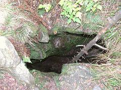

Zbójnicka Jama - jaskinia znajdująca się na zachodnich zboczach Jaworzyny Kamienickiej. Znajduje się w odległości 800 m od kapliczki Bulandy znajdującej się na polanie Jaworzyna Kamienicka. Wejście do niej jest trudne, rozpoczyna się bowiem pionową studzienką o głębokości 3,5 m. Od dna studzienki odchodzi szczelina o przebiegu NE-SW, w południowo-zachodnim kierunku mająca długość 10 m, w kierunku północno-wschodnim 15 m. Obydwa jej końce kończą się zawaliskiem. Otwór wejściowy i szyb porośnięte są glonami oraz wątrobowcami. Zimą ciepłe powietrze wydobywające się z jaskini topi śnieg w jej otworze wejściowym. Jest to jaskinia osuwiskowa. Według geologów jest ona początkowym etapem powstawania osuwiska.
